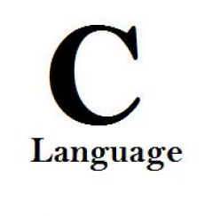

C (programming language)About CC is a general-purpose, imperative computer programming language. It supports structured programming, lexical variable scope and recursion, while a static type system prevents many unintended operations. By design, C provides constructs that map efficiently to typical machine instructions, and therefore it has found lasting use in applications that had formerly been coded in assembly language, including operating systems, as well as various application software for computers ranging from supercomputers to embedded systems. DesignC is an imperative (procedural) language. It was designed to be compiled using a relatively straightforward compiler, to provide low-level access to memory, to provide language constructs that map efficiently to machine instructions, and to require minimal run-time support. C was therefore useful for many applications that had formerly been coded in assembly language, such as in system programming. Despite its low-level capabilities, the language was designed to encourage cross-platform programming. A standards-compliant and portably written C program can be compiled for a very wide variety of computer platforms and operating systems with few changes to its source code. The language has become available on a very wide range of platforms, from embedded microcontrollers to supercomputers.  Click on the Image to view the complete C programming Tutorial |